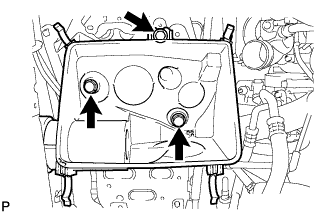

ГЕНЕРАТОР > СНЯТИЕ |
| 1. ОТСОЕДИНИТЕ ПРОВОД ОТ ОТРИЦАТЕЛЬНОГО ВЫВОДА АККУМУЛЯТОРНОЙ БАТАРЕИ |
| 2. СНИМИТЕ ПОЛИКЛИНОВОЙ РЕМЕНЬ ВЕНТИЛЯТОРА И ГЕНЕРАТОРА |
Снимите поликлиновой ремень вентилятора и генератора (Нажмите здесь).
| 3. СНИМИТЕ УПЛОТНЕНИЕ ФАРТУКА ПРАВОГО ПЕРЕДНЕГО КРЫЛА |
С помощью съемника фиксаторов снимите 5 фиксатора и уплотнение фартука правого переднего крыла.
| 4. СНИМИТЕ КРЫШКУ ВОЗДУШНОГО ФИЛЬТРА В СБОРЕ |
 |
За исключением моделей, предназначенных для эксплуатации в холодном климате:
Открепите 2 зажима и отсоедините разъем датчика массового расхода воздуха.
| *A | За исключением моделей, предназначенных для эксплуатации в холодном климате |
| *B | Для моделей, предназначенных для эксплуатации в холодном климате |
Для автомобилей, предназначенных для эксплуатации в холодном климате:
Открепите 3 зажима и отсоедините разъем датчика массового расхода воздуха.
Освободите 4 зажима и снимите крышку воздушного фильтра.
| 5. СНИМИТЕ ФИЛЬТРУЮЩИЙ ЭЛЕМЕНТ ВОЗДУШНОГО ФИЛЬТРА В СБОРЕ |
| 6. СНИМИТЕ КОРПУС ВОЗДУШНОГО ФИЛЬТРА В СБОРЕ |
|  |
Выверните 3 болта и снимите корпус воздушного фильтра.
| 7. СНИМИТЕ ВОЗДУШНЫЙ ШЛАНГ № 1 |
 |
Ослабьте 2 зажима.
Отсоедините воздушный шланг № 1 от впускного патрубка и промежуточного охладителя.
| 8. СНИМИТЕ ГЕНЕРАТОР |
 |
Отсоедините разъем генератора.
Снимите заглушку контакта.
Отверните гайку и отсоедините провод генератора.
Выверните 2 болта и снимите генератор.